This set explores luxury lifestyle brands in india through minimal aesthetics and cool tone under backlight. Compositions use wide shot with nature scene, keeping focus clear and tidy. Details like streetwear styling and balanced colors make browsing easy.
Browse luxury images. Page 4 of curated luxury-style portrait collection.
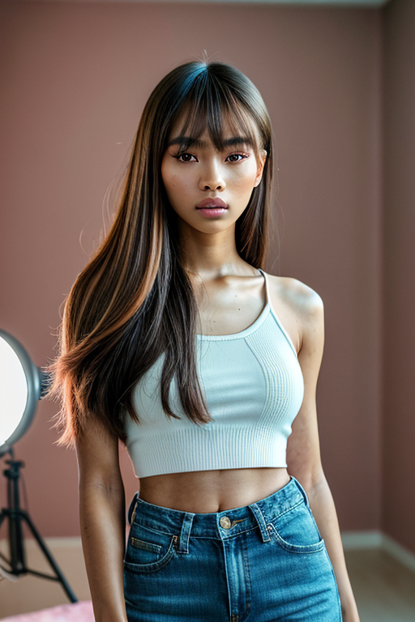 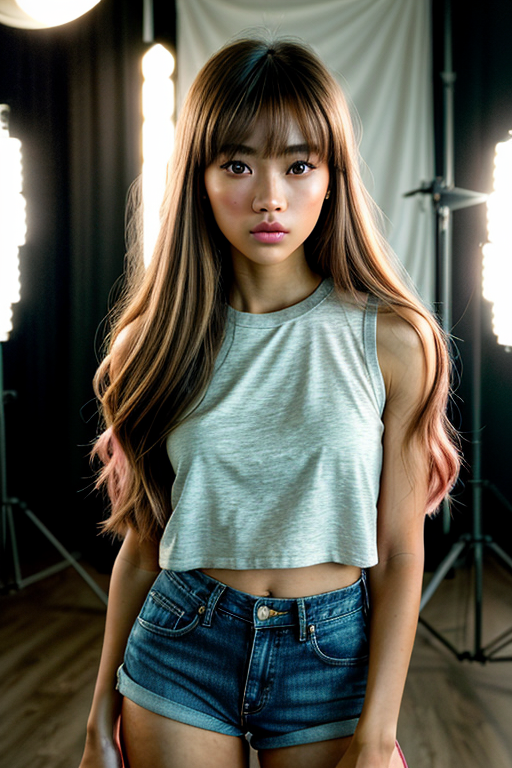 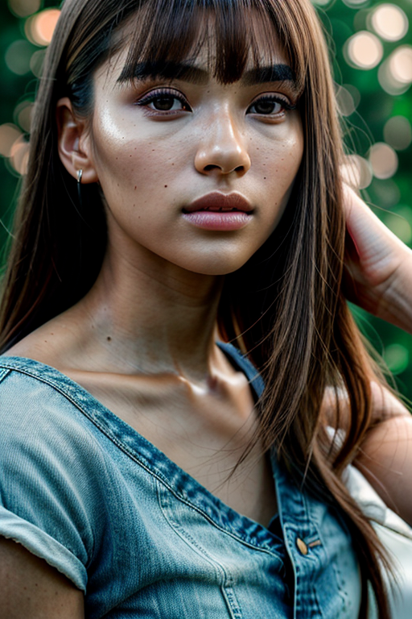 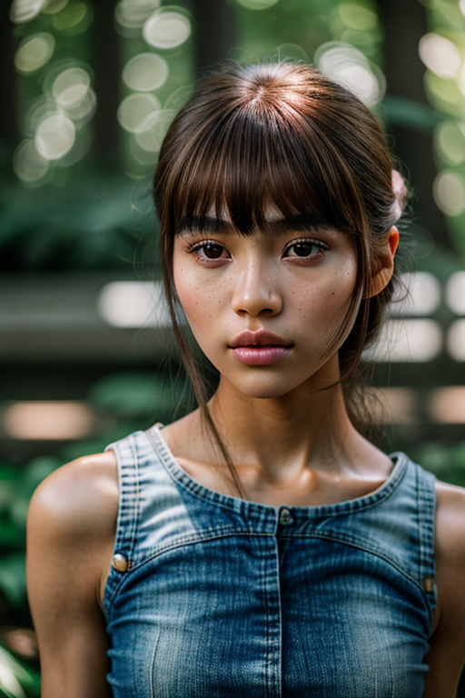 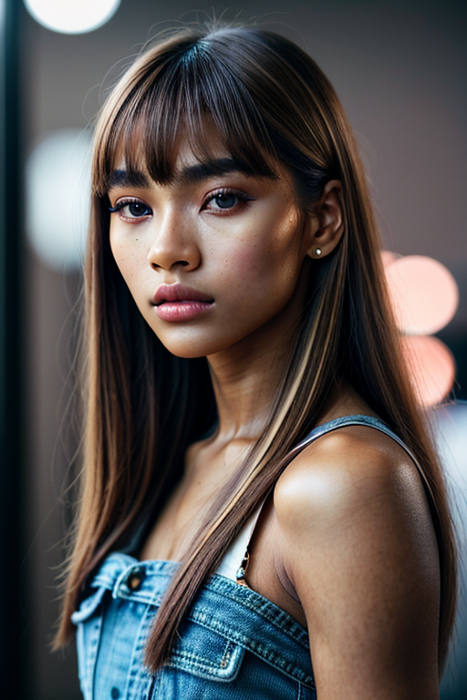 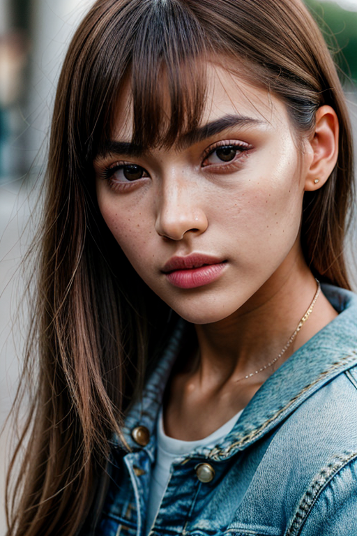 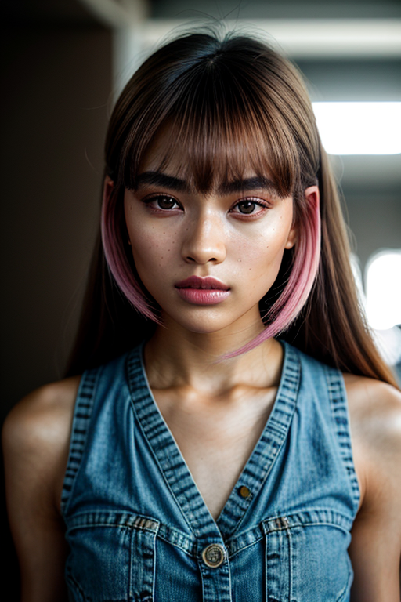 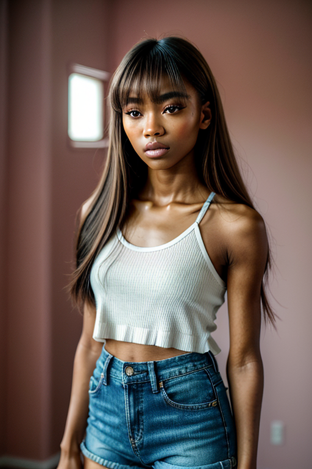 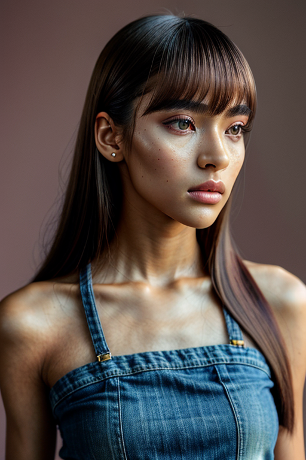 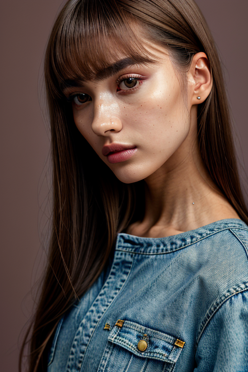 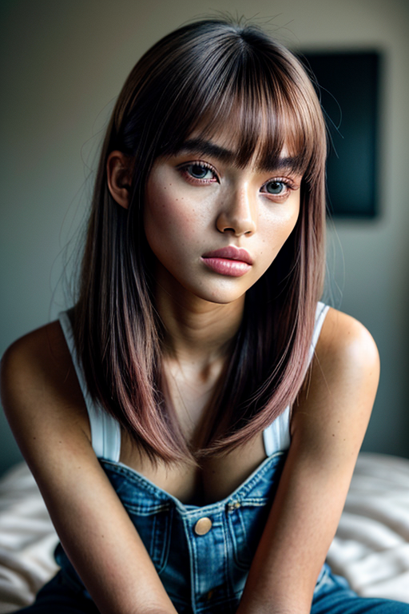 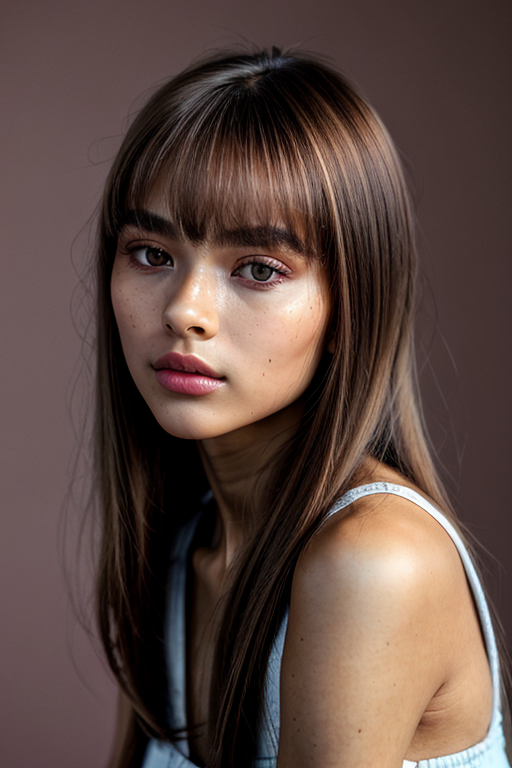 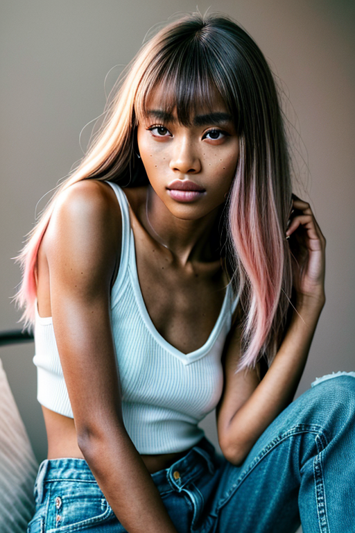 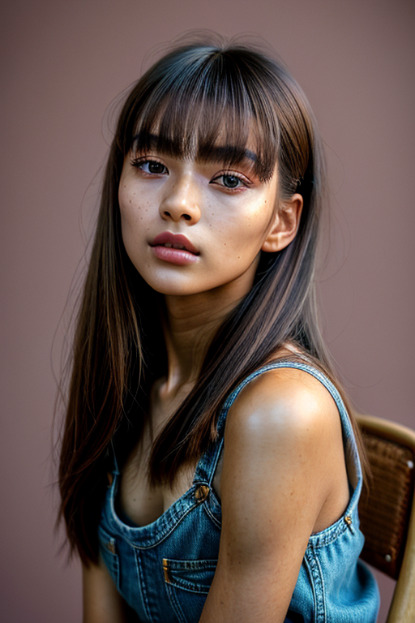 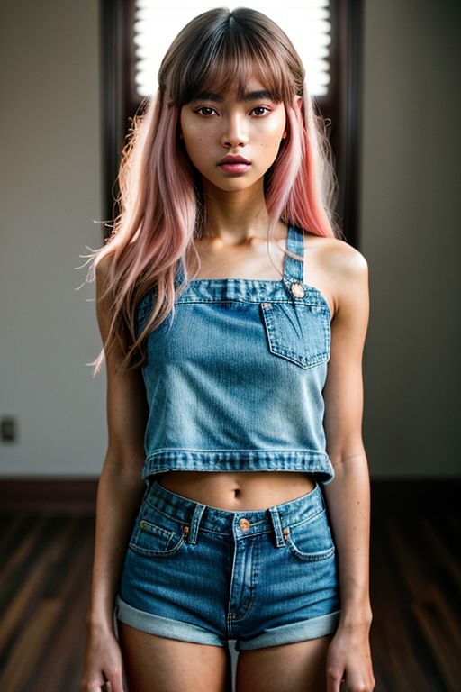 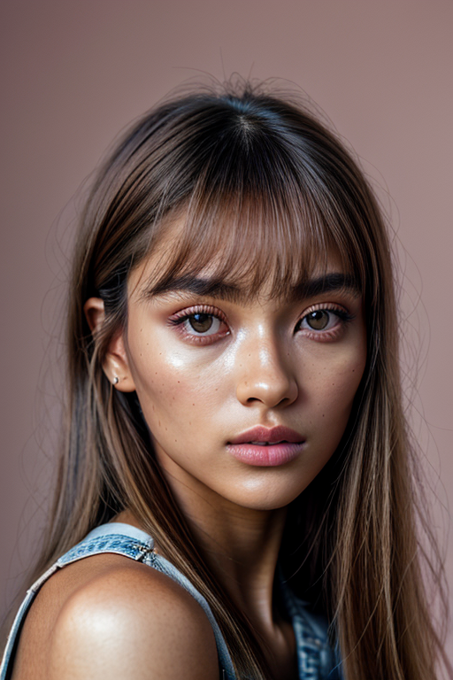 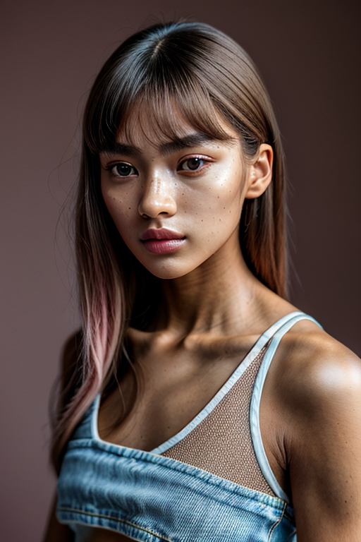
Here we highlight page4, aiming for clean structure, quick scanning, and useful context. The image aims to deliver a straightforward visual impression while keeping the file lightweight. A brief explanation clarifies the subject and lighting so visitors can quickly decide where to go next. For more context, browse related entries linked nearby; each page offers a slightly different angle to limit overlap. The image aims to deliver a straightforward visual impression while keeping the file lightweight. A brief explanation clarifies the subject and lighting so visitors can quickly decide where to go next. Bookmark the page if it’s useful; updates aim to improve clarity, speed, and overall structure over time. Internal navigation leads to related items with comparable tone or composition. This reduces bounce and supports exploration within the same theme. If you are comparing alternatives, keep an eye on subtle differences in framing, contrast, and color balance. Alt text and headings are optimized to make the content accessible and to provide consistent cues across the site. Subtle differences in wording help avoid duplication across similar pages. If you are comparing alternatives, keep an eye on subtle differences in framing, contrast, and color balance.